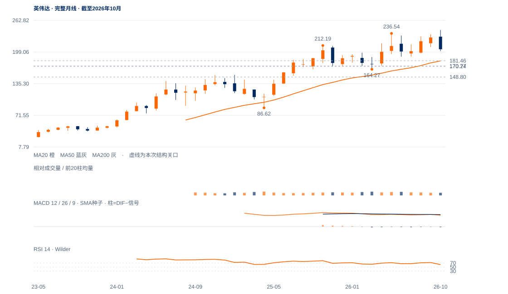

偏弱且高波动
未来1—5日仍偏弱且可能剧烈反抽，先看167.14—170.77下缺口回收与148.80回测质量。
未来1—5日仍偏弱且可能剧烈反抽，先看167.14—170.77下缺口回收与148.80回测质量。
未来2—6周仍偏弱且可能剧烈反抽，先检验167.14—170.77缺口回收，再看原181.46两日条件。148.80若被日收失守，大量回收候选失败；若回测低量拒跌并收回181.46，筑底解释增强。
未来1—3个月基准是中期破坏后的修复重建。必须先周收回181.16附近并形成较高谷，才有向189.80—200.81扩展的依据；连续两周收低148.80则长期升势面临进一步损伤，当前没有可靠形态可给出确定下跌终点。

展开图表 ↗拆股调整后，2022低10.813至2025年4月86.62、今年10月243.37形成多年大上行。现价166.19已跌到完整10/20月均衡200.81/181.16下方，11月最低148.80；10月月RSI61.83反映急跌前状态，已落后于当前价格变化。相对2025年86.62至243.37升波，现价回吐约49.2%，最低影线回吐约60.3%，中期损伤明确。
6月189.80低区被跌破，最新盘中148.80也穿过今年3月164.27低点，但收166.19又回其上，形成长期位置附近的大量回收。当天量比4.49、收于振幅94.8%处是强反证；同时整日下缺口167.14—170.77仍未补，尚不足以确认吸收或底部。
破谷后的整日下缺口与极大量日内回收形成冲突。148.80是承接边界，170.77回收和后续低量测试决定止跌候选能否发展。
11日收173.73曾回170.24之上，12日再收166.19；旧受损线170.24重新失守，原181.46向上条件并未完成。
12日最高167.14低于前日低170.77，形成167.14—170.77整日下缺口；现价仍在其下。此前179.92—185.22下缺口也未填补，压力是分层的。
当日最低148.80、收166.19，收盘位置94.8%、量比4.49；这是有力的盘中回收。但日涨跌仍-4.34%，RSI25.99、20日跌23.50%，还不能将高量定性为已完成吸收。
先连续两个完整日收回170.77；原170.24受损记录与181.46上行条件分别保留。
日收再低于165.89增强弱势；148.80是本次强回收的日低边界，失守将否定该回收候选。
极大量接近日高收盘、重新收回164.27，可能反映急跌末段承接；若下缺口迅速填补并保持，短线偏弱应降级，而不能机械延伸旧跌势。
| 周期 | 最后完整柱 | 图示柱数 | RSI14 | ATR14 | MACD柱 |
|---|---|---|---|---|---|
| 日线 | 2026-11-12 | 185 | 25.99083 | 9.85588 | -4.16245 |
| 周线 | 2026-11-06 | 156 | 39.56964 | 16.62345 | -4.03665 |
| 月线 | 2026-10-30 | 96 | 61.82853 | 28.91722 | -0.68282 |
美股价格拆股调整、不含分红再投资。完整周线至11月6日；11月进行中。指数成交量与全成分广度受限。